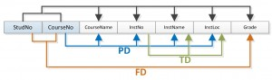
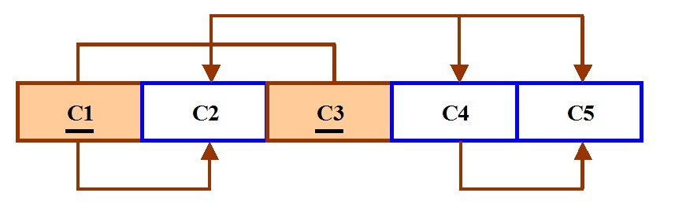
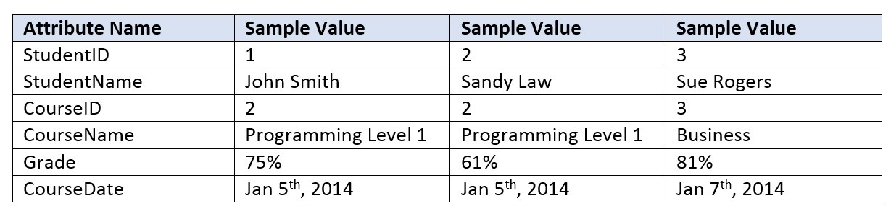
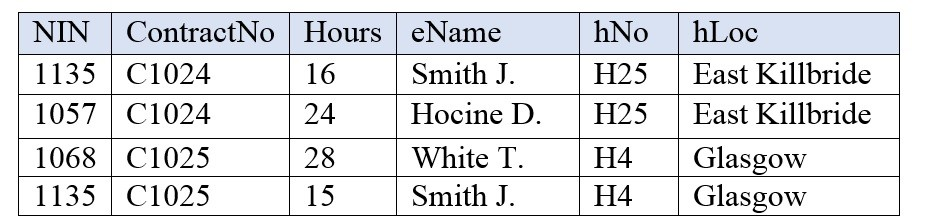

Normalization
التطبيع
المتن الرئيسي
Student_Grade_Report (StudentNo, StudentName, Major, CourseNo, CourseName, InstructorNo, InstructorName, InstructorLocation, Grade)
ينبغي أن يكون التطبيع (normalization) جزءًا من عملية تصميم قاعدة البيانات. غير أنه من الصعب فصل عملية التطبيع عن عملية النمذجة بنموذج الكيانات والعلاقات (ER modelling)، ولذلك ينبغي استخدام التقنيتين في وقت واحد.
Student (StudentNo, StudentName, Major)
استخدم مخطط الكيانات والعلاقات (entity relation diagram, ERD) لتقديم الصورة الكبرى، أي الرؤية الكلية (macro view)، لمتطلّبات (requirements) وعمليات منظمة ما. وقد أُنشئ هذا المخطط عبر عملية تكرارية تتضمن تحديد الكيانات (entities) ذات الصلة وخصائصها (attributes) وعلاقاتها (relationships).
StudentCourse (StudentNo, CourseNo, CourseName, InstructorNo, InstructorName, InstructorLocation, Grade)
يركّز إجراء التطبيع على خصائص كيانات بعينها، ويمثّل الرؤية الدقيقة (micro view) للكيانات داخل مخطط ERD.
Student (StudentNo, StudentName, Major)
ما هو التطبيع؟
CourseGrade (StudentNo, CourseNo, Grade)
التطبيع هو فرع النظرية العلائقية الذي يقدّم رؤى التصميم. وهو عملية تحديد مقدار التكرار (redundancy) الموجود في الجدول. وأهداف التطبيع هي:
CourseInstructor (CourseNo, CourseName, InstructorNo, InstructorName, InstructorLocation)
- القدرة على توصيف مستوى التكرار في مخطط علائقي
- توفير آليات لتحويل المخططات بهدف إزالة التكرار
Student (StudentNo, StudentName, Major)
تعتمد نظرية التطبيع بدرجة كبيرة على نظرية الاعتماديات الوظيفية (functional dependencies). وتُعرّف نظرية التطبيع ست صيغ عادية (normal forms, NF). وتتضمن كل صيغة عادية مجموعة من خصائص الاعتماديات التي يجب أن يستوفيها المخطط، وتقدّم كل صيغة عادية ضمانات بشأن وجود شواهد التحديث و/أو غيابها. وهذا يعني أن الصيغ العادية الأعلى تكرارًا أقل، وبالتالي مشكلات تحديث أقل.
CourseGrade (StudentNo, CourseNo, Grade)
الصيغ العادية
Course (CourseNo, CourseName, InstructorNo)
يمكن أن تقع جميع جداول أي قاعدة بيانات في إحدى الصيغ العادية التي سنناقشها تاليًا. ومن الناحية المثلى نريد حدًا أدنى فقط من التكرار في العلاقة بين المفتاح الأساسي والمفتاح الأجنبي (PK to FK). وكل ما عدا ذلك ينبغي أن يُشتق من جداول أخرى. وهناك ست صيغ عادية، غير أننا سنقتصر على الأربع الأولى، وهي:
Instructor (InstructorNo, InstructorName, InstructorLocation)
- الصيغة العادية الأولى (1NF)
- الصيغة العادية الثانية (2NF)
- الصيغة العادية الثالثة (3NF)
- صيغة بايس-كود العادية (BCNF)
Key Terms and Abbrevations
Boyce-Codd normal form (BCNF): a special case of 3rd NF
first normal form (1NF): only single values are permitted at the intersection of each row and column so there are no repeating groups
normalization: the process of determining how much redundancy exists in a table
second normal form (2NF): the relation must be in 1NF and the PK comprises a single attribute
semantic rules: business rules applied to the database
third normal form (3NF): the relation must be in 2NF and all transitive dependencies must be removed; a non-key attribute may not be functionally dependent on another non-key attribute
نادرًا ما تُستخدم BCNF.
Exercises
Complete chapters 11 and 12 before doing these exercises.
What is normalization?
When is a table in 1NF?
When is a table in 2NF?
When is a table in 3NF?
Identify and discuss each of the indicated dependencies in the dependency diagram shown in Figure 12.2.
IMAGE1END Figure 12.2 For question 5, by A. Watt.
To keep track of students and courses, a new college uses the table structure in Figure 12.3.
Draw the dependency diagram for this table.
IMAGE2END Figure 12.3 For question 6, by A. Watt.
Using the dependency diagram you just drew, show the tables (in their third normal form) you would create to fix the problems you encountered. Draw the dependency diagram for the fixed table.
An agency called Instant Cover supplies part-time/temporary staff to hotels in Scotland. Figure 12.4 lists the time spent by agency staff working at various hotels. The national insurance number (NIN) is unique for every member of staff. Use Figure 12.4 to answer questions (a) and (b).
IMAGE3END Figure 12.4 For question 8, by A. Watt.
This table is susceptible to update anomalies. Provide examples of insertion, deletion and update anomalies.
Normalize this table to third normal form. State any assumptions.
Fill in the blanks:
____________________ produces a lower normal form.
Any attribute whose value determines other values within a row is called a(n) ____________________.
An attribute that cannot be further divided is said to display ____________________.
____________________ refers to the level of detail represented by the values stored in a table’s row.
A relational table must not contain ____________________ groups.
Also see Appendix B: Sample ERD Exercises
الصيغة العادية الأولى (1NF)
في الصيغة العادية الأولى، لا يُسمح إلا بقيم مفردة عند تقاطع كل صف مع كل عمود؛ ومن ثمّ لا توجد مجموعات متكرّرة (repeating groups).
لِتطبيع علاقة تحتوي على مجموعة متكرّرة، أزل المجموعة المتكرّرة وكوّن علاقتين جديدتين.
المفتاح الأساسي للعلاقة الجديدة هو تركيبة من المفتاح الأساسي للعلاقة الأصلية مضافًا إليها خاصية من العلاقة المُنشأة حديثًا لأغراض التعريف الفريد.
عملية الصيغة العادية الأولى
سنستخدم جدول Student_Grade_Report أدناه، من قاعدة بيانات مدرسة (School)، كمثال لتشرح عملية الصيغة العادية الأولى.
Student_Grade_Report (StudentNo, StudentName, Major, CourseNo, CourseName, InstructorNo, InstructorName, InstructorLocation, Grade)
- في جدول Student Grade Report، المجموعة المتكرّرة هي معلومات المقرر. ويمكن للطالب أن يدرس مقررات كثيرة.
- أزل المجموعة المتكرّرة. وفي هذه الحالة، هي معلومات المقرر لكل طالب.
- حدّد المفتاح الأساسي لجدولك الجديد.
- يجب أن يعرّف المفتاح الأساسي قيمة الخاصية تعريفًا فريدًا (StudentNo و CourseNo).
- بعد إزالة جميع الخصائص المتعلقة بالمقرر والطالب، يبقى لديك جدول مقررات الطالب (StudentCourse).
- أصبح جدول الطالب (Student) الآن في الصيغة العادية الأولى بعد إزالة المجموعة المتكرّرة.
- يظهر الجدولان الجديدان أدناه.
Student (StudentNo, StudentName, Major) StudentCourse (StudentNo, CourseNo, CourseName, InstructorNo, InstructorName, InstructorLocation, Grade)
كيفية تحديث شواهد الصيغة العادية الأولى
StudentCourse (StudentNo, CourseNo, CourseName, InstructorNo, InstructorName, InstructorLocation, Grade)
- لإضافة مقرر جديد، نحتاج إلى طالب.
- وعندما يلزم تحديث معلومات المقرر، قد تنشأ حالات عدم اتساق.
- ولحذف طالب، قد نحذف أيضًا معلومات جوهرية عن مقرر.
الصيغة العادية الثانية (2NF)
بالنسبة إلى الصيغة العادية الثانية، يجب أن تكون العلاقة في الصيغة العادية الأولى أولًا. وتكون العلاقة في الصيغة العادية الثانية تلقائيًا إذا، وإذا فقط، كان المفتاح الأساسي مكونًا من خاصية واحدة.
وإذا كانت العلاقة ذات مفتاح أساسي مركّب (composite PK)، فيجب أن تعتمد كل خاصية غير مفتاحية اعتمادًا كاملًا على المفتاح الأساسي بالكامل لا على مجموعة جزئية منه (أي أنه يجب ألا توجد اعتمادية جزئية (partial dependency) أو توسعة).
عملية الصيغة العادية الثانية
للانتقال إلى الصيغة العادية الثانية، يجب أن يكون الجدول في الصيغة العادية الأولى أولًا.
- جدول الطالب موجود بالفعل في الصيغة العادية الثانية لأنه ذو مفتاح أساسي من عمود واحد.
- عند فحص جدول مقررات الطالب، نجد أن الخصائص كلها لا تعتمد اعتمادًا كاملًا على المفتاح الأساسي؛ وتحديدًا معلومات المقرر كلها. والخاصية الوحيدة التي تعتمد اعتمادًا كاملًا هي الدرجة (grade).
- حدّد الجدول الجديد الذي يحتوي على معلومات المقرر.
- حدّد المفتاح الأساسي للجدول الجديد.
- تظهر الجداول الثلاثة الجديدة أدناه.
Student (StudentNo, StudentName, Major) CourseGrade (StudentNo, CourseNo, Grade) CourseInstructor (CourseNo, CourseName, InstructorNo, InstructorName, InstructorLocation)
كيفية تحديث شواهد الصيغة العادية الثانية
- عند إضافة مدرّس جديد، نحتاج إلى مقرر.
- قد يؤدي تحديث معلومات المقرر إلى حالات عدم اتساق في معلومات المدرّس.
- وقد يؤدي حذف مقرر أيضًا إلى حذف معلومات المدرّس.
الصيغة العادية الثالثة (3NF)
كي تكون العلاقة في الصيغة العادية الثالثة، يجب أن تكون في الصيغة العادية الثانية. كما يجب إزالة جميع الاعتماديات المتعدّية (transitive dependencies)؛ فلا يجوز أن تعتمد خاصية غير مفتاحية اعتمادًا وظيفيًا على خاصية غير مفتاحية أخرى.
عملية الصيغة العادية الثالثة
- أزل جميع الخصائص المعتمدة في العلاقة (العلاقات) المتعدّية من كل جدول له علاقة متعدّية.
- أنشئ جدولًا (أو جداول) جديدًا بالاعتمادية المُزالة.
- افحص الجداول الجديدة وكذلك الجداول المعدَّلة للتأكد من أن كل جدول لديه محدِّد (determinant) وأنه لا يحتوي أي جدول على اعتماديات غير مناسبة.
- انظر الجداول الأربعة الجديدة أدناه.
Student (StudentNo, StudentName, Major) CourseGrade (StudentNo, CourseNo, Grade) Course (CourseNo, CourseName, InstructorNo) Instructor (InstructorNo, InstructorName, InstructorLocation)
في هذه المرحلة، لا ينبغي أن توجد شواهد في الصيغة العادية الثالثة. ولنتأمّل مخطط الاعتماديات (الشكل 12.1) لهذا المثال. والخطوة الأولى هي إزالة المجموعات المتكرّرة، كما ناقشنا أعلاه.
Student (StudentNo, StudentName, Major)
StudentCourse (StudentNo, CourseNo, CourseName, InstructorNo, InstructorName, InstructorLocation, Grade)
ولنُراجع عملية التطبيع لقاعدة بيانات المدرسة، راجع الاعتماديات المبيَّنة في الشكل 12.1.

الاختصارات المستخدمة في الشكل 12.1 هي كما يلي:
- PD: اعتمادية جزئية
- TD: اعتمادية متعدّية
- FD: اعتمادية كاملة (ملاحظة: يرمز FD عادةً إلى الاعتمادية الوظيفية. واستخدام FD كاختصار للاعتمادية الكاملة لا يظهر إلا في الشكل 12.1.)
صيغة بايس-كود العادية (BCNF)
عندما يكون في الجدول أكثر من مفتاح مرشّح (candidate key)، قد تنشأ شواهد حتى مع وجود العلاقة في الصيغة العادية الثالثة. وصيغة بايس-كود العادية هي حالة خاصة من الصيغة العادية الثالثة. وتكون العلاقة في BCNF إذا، وإذا فقط، كان كل محدِّد مفتاحًا مرشّحًا.
المثال 1 على BCNF
تأمّل الجدول التالي (St_Maj_Adv).
| Student_id | Major | Advisor |
|---|---|---|
| 111 | Physics | Smith |
| 111 | Music | Chan |
| 320 | Math | Dobbs |
| 671 | Physics | White |
| 803 | Physics | Smith |
القواعد الدلالية (semantic rules) أي قواعد العمل (business rules) المطبَّقة على قاعدة البيانات لهذا الجدول هي:
- قد يتخصّص كل طالب (Student) في عدة تخصصات.
- لكل تخصص (Major)، لدى طالب معيّن مرشد واحد فقط (Advisor).
- لكل تخصص عدة مرشدين.
- يشرف كل مرشد على تخصص واحد فقط.
- يشرف كل مرشد على عدة طلاب في تخصص واحد.
تُدرَج الاعتماديات الوظيفية لهذا الجدول أدناه. الأولى مفتاح مرشّح؛ والثانية ليست كذلك.
- Student_id, Major ——> Advisor
- Advisor ——> Major
تشمل شواهد هذا الجدول ما يلي:
- الحذف – حذف الطالب يُسقط معلومات المرشد
- الإدراج – المرشد الجديد يحتاج إلى طالب
- التحديث – حالات عدم اتساق
ملاحظة: لا توجد خاصية منفردة تصلح كمفتاح مرشّح.
يمكن أن يكون المفتاح الأساسي هو Student_id, Major أو Student_id, Advisor.
لتقليص علاقة St_Maj_Adv إلى BCNF، تنشئ جدولين جديدين:
- St_Adv (Student_id, Advisor)
- Adv_Maj (Advisor, Major)
جدول St_Adv
| Student_id | Advisor |
|---|---|
| 111 | Smith |
| 111 | Chan |
| 320 | Dobbs |
| 671 | White |
| 803 | Smith |
جدول Adv_Maj
| Advisor | Major |
|---|---|
| Smith | Physics |
| Chan | Music |
| Dobbs | Math |
| White | Physics |
المثال 2 على BCNF
تأمّل الجدول التالي (Client_Interview).
| ClientNo | InterviewDate | InterviewTime | StaffNo | RoomNo |
|---|---|---|---|---|
| CR76 | 13-May-02 | 10.30 | SG5 | G101 |
| CR56 | 13-May-02 | 12.00 | SG5 | G101 |
| CR74 | 13-May-02 | 12.00 | SG37 | G102 |
| CR56 | 1-July-02 | 10.30 | SG5 | G102 |
FD1 – ClientNo, InterviewDate –> InterviewTime, StaffNo, RoomNo (PK)
FD2 – staffNo, interviewDate, interviewTime –> clientNO (مفتاح مرشّح: CK)
FD3 – roomNo, interviewDate, interviewTime –> staffNo, clientNo (CK)
FD4 – staffNo, interviewDate –> roomNo
تكون العلاقة في BCNF إذا، وإذا فقط، كان كل محدِّد مفتاحًا مرشّحًا. ونحتاج إلى إنشاء جدول يدمج الاعتماديات الوظيفية الثلاث الأولى (جدول Client_Interview2) وجدول آخر (جدول StaffRoom) للاعتمادية الوظيفية الرابعة.
جدول Client_Interview2
| ClientNo | InterviewDate | InterViewTime | StaffNo |
|---|---|---|---|
| CR76 | 13-May-02 | 10.30 | SG5 |
| CR56 | 13-May-02 | 12.00 | SG5 |
| CR74 | 13-May-02 | 12.00 | SG37 |
| CR56 | 1-July-02 | 10.30 | SG5 |
جدول StaffRoom
| StaffNo | InterviewDate | RoomNo |
|---|---|---|
| SG5 | 13-May-02 | G101 |
| SG37 | 13-May-02 | G102 |
| SG5 | 1-July-02 | G102 |
التطبيع وتصميم قاعدة البيانات
خلال عملية التطبيع في تصميم قاعدة البيانات، تأكد من أن الكيانات المقترحة تستوفي الصيغة العادية المطلوبة قبل إنشاء هياكل الجداول. وقد جرت تصميم كثير من قواعد البيانات الواقعية تصميمًا رديئًا أو تراكمت عليها الشواهد بسبب تعديلات غير سليمة عبر مرور الوقت. وقد يُطلب منك إعادة تصميم قواعد البيانات القائمة وتعديلها. وقد يكون ذلك عملًا كبيرًا إذا لم تكن الجداول مُطبَّعة على نحو صحيح.
صيغة بايس-كود العادية (BCNF): حالة خاصة من الصيغة العادية الثالثة
الصيغة العادية الأولى (1NF): لا يُسمح إلا بقيم مفردة عند تقاطع كل صف مع كل عمود، ولذلك لا توجد مجموعات متكرّرة
التطبيع (normalization): عملية تحديد مقدار التكرار الموجود في الجدول
الصيغة العادية الثانية (2NF): يجب أن تكون العلاقة في الصيغة العادية الأولى وأن يكون المفتاح الأساسي مكونًا من خاصية واحدة
القواعد الدلالية (semantic rules): قواعد العمل المطبَّقة على قاعدة البيانات
الصيغة العادية الثالثة (3NF): يجب أن تكون العلاقة في الصيغة العادية الثانية وأن تكون جميع الاعتماديات المتعدّية مُزالة؛ ولا يجوز أن تعتمد خاصية غير مفتاحية اعتمادًا وظيفيًا على خاصية غير مفتاحية أخرى. أكمل الفصلين 11 و12 قبل إنجاز هذه التمارين.
- ما هو التطبيع؟
- متى يكون الجدول في الصيغة العادية الأولى؟
- متى يكون الجدول في الصيغة العادية الثانية؟
- متى يكون الجدول في الصيغة العادية الثالثة؟
- حدّد وناقش كل واحدة من الاعتماديات المُشار إليها في مخطط الاعتماديات المبيّن في الشكل 12.2.

الشكل 12.2 للسؤال 5، عن A. Watt. - لمتابعة الطلاب والمقررات، تستخدم كلية جديدة بنية الجدول المبيَّنة في الشكل 12.3. ارسم مخطط الاعتماديات لهذا الجدول.

الشكل 12.3 للسؤال 6، عن A. Watt. - باستخدام مخطط الاعتماديات الذي رسمته للتو، اعرض الجداول (في صيغتها العادية الثالثة) التي كنت ستنشئها لإصلاح المشكلات التي واجهتك. ارسم مخطط الاعتماديات للجدول المُصحَّح.
- توفّر مؤسسة تسمى Instant Cover موظفين بدوام جزئي/مؤقتين للفنادق في اسكتلندا. ويسرد الشكل 12.4 الوقت الذي قضاه موظفو المؤسسة في العمل بفنادق مختلفة. ورقم التأمين الوطني (NIN) فريد لكل موظف. استخدم الشكل 12.4 للإجابة عن السؤالين (أ) و(ب).

الشكل 12.4 للسؤال 8، عن A. Watt. هذا الجدول عرضة لشواهد التحديث. قدِّم أمثلة على شواهد الإدراج والحذف والتحديث. - طبِّع هذا الجدول إلى الصيغة العادية الثالثة. واذكر أي افتراضات.
املأ الفراغات:
- ____________________ ينتج صيغة عادية أدنى.
- أي خاصية تحدّد قيمها قيم أخرى داخل الصف تُسمّى ____________________.
- يُقال إن الخاصية التي لا يمكن تقسيمها أكثر تعرض ____________________.
- ____________________ يشير إلى مستوى التفصيل الذي تمثّله القيم المخزَّنة في صف الجدول.
- يجب ألا يحتوي الجدول العلائقي على مجموعات ____________________.
انظر أيضًا الملحق B: تمارين ERD نموذجية
المراجع
Nguyen Kim Anh، نظرية التصميم العلائقي (Relational Design Theory). OpenStax CNX. 8 يوليو 2009. تم الاسترجاع في يوليو 2014 من http://cnx.org/contents/606cc532-0b1d-419d-a0ec-ac4e2e2d533b@1@1
Russell, Gordon. الفصل 4 – التطبيع (Normalisation). Database eLearning. بدون تاريخ. تم الاسترجاع في يوليو 2014 من db.grussell.org/ch4.html